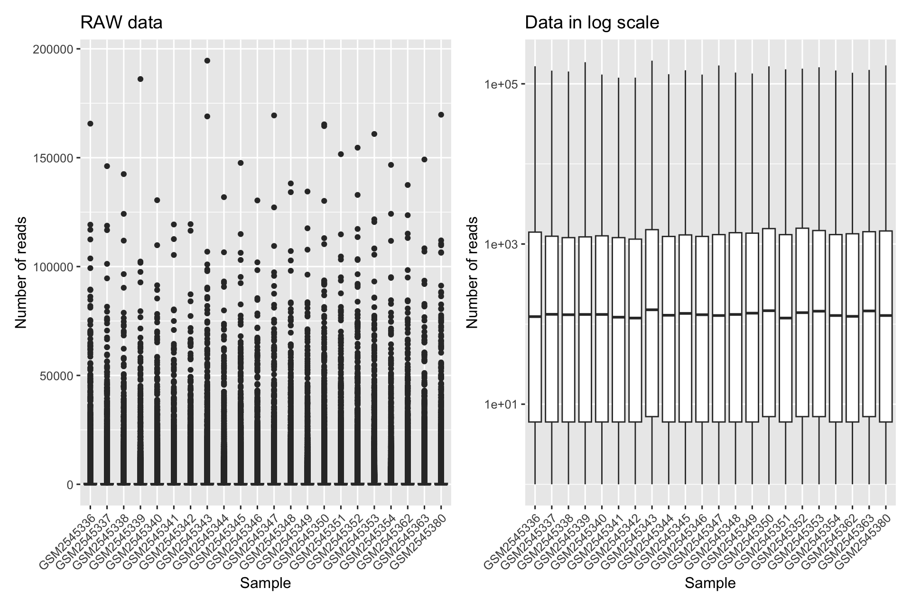
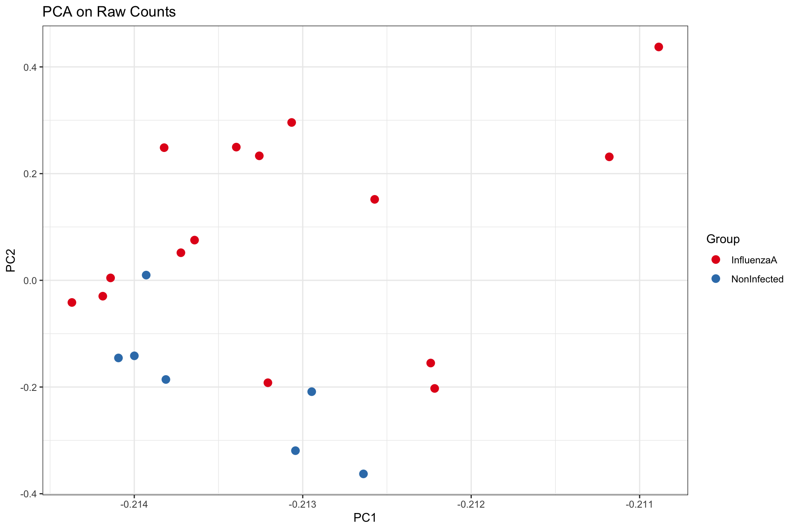

L’analisi esplorativa dei dati (EDA) sui dati di conteggio grezzi di RNA-Seq è fondamentale prima della normalizzazione per diverse ragioni:
1. Comprensione della struttura e della variabilità dei dati
2. Identificazione di potenziali bias
3. Guida alla normalizzazione e all’analisi a valle
4.1 Distribuzione dei conteggi
Mostra il codice R
library(patchwork)#> #> Attaching package: 'patchwork'#> The following object is masked from 'package:cowplot':#> #> align_plotsp1<-readcounts|>tibble()|>pivot_longer(cols =everything(), names_to ="Sample", values_to ="Reads")|>ggplot(aes(Sample, Reads))+geom_boxplot()+labs(title ="RAW data", y ="Number of reads")+theme(axis.text.x =element_text(angle =45, hjust =1))p2<-readcounts|>tibble()|>pivot_longer(cols =everything(), names_to ="Sample", values_to ="Reads")|>ggplot(aes(Sample, Reads))+geom_boxplot()+scale_y_log10()+labs(title ="Data in log scale", y ="Number of reads")+theme(axis.text.x =element_text(angle =45, hjust =1))p1+p2#> Warning in scale_y_log10(): log-10 transformation introduced infinite#> values.#> Warning: Removed 372413 rows containing non-finite outside the scale range#> (`stat_boxplot()`).

4.2 Differenze nella dimensione della libreria
Mostra il codice R
tmp<-colSums(readcounts)tibble(Label =names(tmp), libSize =tmp)|>left_join(coldata|>select(Label =geo_accession, Group =infection))|>ggplot(aes(x =Label, y =libSize/1e6, fill =Group))+geom_bar(stat ="identity")+theme_bw()+labs(x ="Sample", y ="Total count in millions")+theme(axis.text.x =element_text(angle =45, hjust =1, vjust =1))+scale_fill_brewer(palette ="Set1")#> Joining with `by = join_by(Label)`
4.3 Variabilità dell’espressione genica
Mostra il codice R
p1<-readcounts|>ggplot(aes(x =GSM2545336, y =GSM2545336))+geom_point()+geom_abline(slope =1)+labs(title ="Stesso campione")p2<-readcounts|>ggplot(aes(x =GSM2545337, y =GSM2545338))+geom_point()+geom_abline(slope =1)+labs(title ="Due campioni controllo")p3<-readcounts|>ggplot(aes(x =GSM2545339, y =GSM2545341))+geom_point()+geom_abline(slope =1)+labs(title ="Due campioni trattato")p4<-readcounts|>ggplot(aes(x =GSM2545338, y =GSM2545342))+geom_point()+geom_abline(slope =1)+labs(title ="Confronto tra un campione trattato e uno controllo")(p1+p2)/(p3+p4)
4.4 Identificazione di potenziali bias
4.4.1 Principal Component Analysis
Mostra il codice R
pca_res<-prcomp(readcounts, scale. =TRUE)# Create PCA plot of raw countstibble(Sample =rownames(pca_res$rotation), PC1 =pca_res$rotation[,1], PC2 =pca_res$rotation[,2])|>left_join(coldata|>select(Sample =geo_accession, Group =infection))|>ggplot(aes(x =PC1, y =PC2, color =Group))+geom_point(size =3)+ggtitle("PCA on Raw Counts")+theme_bw()+scale_color_brewer(palette ="Set1")#> Joining with `by = join_by(Sample)`

Source Code
---params: mycondition: infection mynum: InfluenzaA mydenom: NonInfected mypval: 0.01 myfc: 0.8 mypadj: fdr---```{r}#| echo: false#| message: false#| warning: falsesource("_common.R")library(tidyverse)library(DESeq2) # BioClibrary(RColorBrewer)library(pheatmap)library(ggrepel)library(cowplot)library(DT)library(scales)library(vsn) # BioClibrary(apeglm) # BioClibrary(rmarkdown)library(gt)readcounts <-readRDS("data/readcounts.rds")coldata <-readRDS("data/coldata.rds")dds <-readRDS("data/dds_fitered.rds")```# Esplorazione dei Dati {#sec-preproc-edaraw}L'analisi esplorativa dei dati (EDA) sui dati di conteggio grezzi di RNA-Seq è fondamentale prima della normalizzazione per diverse ragioni:::: {.content-hidden when-meta="features.advanced_analysis"}**1. Comprensione della struttura e della variabilità dei dati:**- **Distribuzione dei conteggi:** l'EDA aiuta a visualizzare la distribuzione dei conteggi grezzi all'interno e tra i campioni. Questo rivela la potenziale asimmetria, la presenza di outlier e l'intervallo generale dei valori di espressione.- **Differenze nella dimensione della libreria:** l'esame delle dimensioni della libreria (conteggi totali per campione) evidenzia le differenze nella profondità di sequenziamento, che possono avere un impatto significativo sull'analisi a valle.- **Variabilità dell'espressione genica:** la valutazione della variabilità dell'espressione genica tra i campioni aiuta a identificare geni altamente variabili o potenziali effetti batch.**2. Identificazione di potenziali bias:**- **Effetti batch:** l'EDA può scoprire effetti batch (differenze sistematiche tra gruppi di campioni elaborati in momenti diversi o in condizioni diverse) che possono confondere l'analisi a valle.- **Campioni anomali:** visualizzazioni come i grafici PCA e MDS possono aiutare a identificare campioni anomali che potrebbero richiedere ulteriori indagini o esclusione.**3. Guida alla normalizzazione e all'analisi a valle:**- **Scelta del metodo di normalizzazione:** le caratteristiche dei dati grezzi, come la presenza di geni altamente variabili o effetti batch, informano la scelta del metodo di normalizzazione più appropriato.- **Filtraggio dei geni a basso conteggio:** l'EDA aiuta a identificare i geni con conteggi costantemente bassi tra i campioni, che possono essere filtrati per ridurre il rumore e migliorare la potenza statistica.:::::: {.content-hidden unless-meta="features.advanced_analysis"}**1. Comprensione della struttura e della variabilità dei dati** **2. Identificazione di potenziali bias****3. Guida alla normalizzazione e all'analisi a valle**:::## Distribuzione dei conteggi```{r}#| out-width: 100%#| fig-width: 10library(patchwork)p1 <- readcounts |>tibble() |>pivot_longer(cols =everything(),names_to ="Sample",values_to ="Reads") |>ggplot(aes(Sample, Reads)) +geom_boxplot() +labs(title ="RAW data",y ="Number of reads") +theme(axis.text.x =element_text(angle =45, hjust =1))p2 <- readcounts |>tibble() |>pivot_longer(cols =everything(),names_to ="Sample",values_to ="Reads") |>ggplot(aes(Sample, Reads)) +geom_boxplot() +scale_y_log10() +labs(title ="Data in log scale",y ="Number of reads") +theme(axis.text.x =element_text(angle =45, hjust =1))p1 + p2```## Differenze nella dimensione della libreria```{r}#| out-width: 100%tmp <-colSums(readcounts) tibble(Label =names(tmp),libSize = tmp) |>left_join(coldata |>select(Label = geo_accession, Group = infection)) |>ggplot(aes(x = Label, y = libSize /1e6, fill = Group)) +geom_bar(stat ="identity") +theme_bw() +labs(x ="Sample", y ="Total count in millions") +theme(axis.text.x =element_text(angle =45, hjust =1, vjust =1)) +scale_fill_brewer(palette ="Set1")```## Variabilità dell'espressione genica```{r}#| out-width: 100%#| fig-width: 10p1 <- readcounts |>ggplot(aes(x = GSM2545336, y = GSM2545336)) +geom_point() +geom_abline(slope =1) +labs(title ="Stesso campione")p2 <- readcounts |>ggplot(aes(x = GSM2545337, y = GSM2545338)) +geom_point() +geom_abline(slope =1) +labs(title ="Due campioni controllo")p3 <- readcounts |>ggplot(aes(x = GSM2545339, y = GSM2545341)) +geom_point() +geom_abline(slope =1) +labs(title ="Due campioni trattato")p4 <- readcounts |>ggplot(aes(x = GSM2545338, y = GSM2545342)) +geom_point() +geom_abline(slope =1) +labs(title ="Confronto tra un campione trattato e uno controllo")(p1 + p2) / (p3 + p4)```## Identificazione di potenziali bias### Principal Component Analysis::: {.content-hidden when-meta="features.advanced_analysis"}Un grafico PCA (Principal Component Analysis) è un metodo di visualizzazione dei dati che viene utilizzato per mostrare la varianza tra più campioni. Il grafico PCA prende i dati ad alta dimensione e li riduce a un numero inferiore di dimensioni, in genere due o tre, che possono essere visualizzate in un grafico. I componenti principali sono nuove variabili che vengono create come combinazioni lineari delle variabili originali. Il primo componente principale cattura la maggior varianza possibile nei dati e il secondo componente principale cattura la seconda maggior varianza possibile e così via. Il grafico PCA mostra i campioni in base ai loro punteggi sui componenti principali, che sono un riflesso dei livelli di espressione genica dei campioni. I campioni con profili di espressione simili saranno raggruppati insieme nel grafico PCA.:::```{r}#| out-width: 100%#| fig-width: 10 pca_res <-prcomp(readcounts, scale. =TRUE)# Create PCA plot of raw countstibble(Sample =rownames(pca_res$rotation),PC1 = pca_res$rotation[,1],PC2 = pca_res$rotation[,2]) |>left_join(coldata |>select(Sample = geo_accession, Group = infection)) |>ggplot(aes(x = PC1, y = PC2, color = Group)) +geom_point(size =3) +ggtitle("PCA on Raw Counts") +theme_bw() +scale_color_brewer(palette ="Set1")```